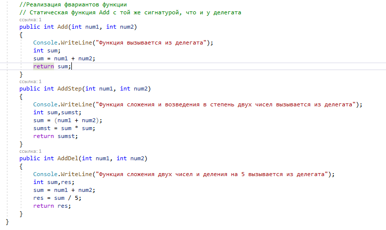
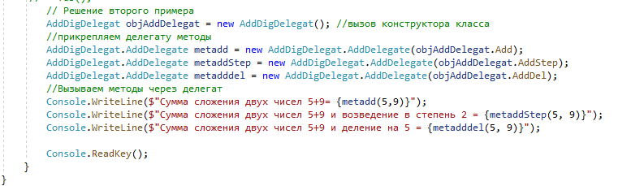
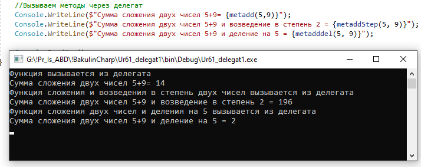

| Второй пример реализации делегатов. | ||
| Назад | ||
|
Делегат содержит методы складывания между собой двух чисел: СинтаксисШаг 1 — Объявление Реализация трех методов. Функция (метод), добавляемая к делегатам, должна иметь тот же тип и сигнатуру, что и делегат;
 Шаг 2 — Инициализация Делегат инициализируется путём передачи ему имени метода в качестве аргумента. Шаг 3 — Вызов Вызываем созданный делегат с указанием параметров, если это необходимо.
 Результат:  |
||
| Конспект подготовлен Бакулиным А. М. 2022 год. | ||